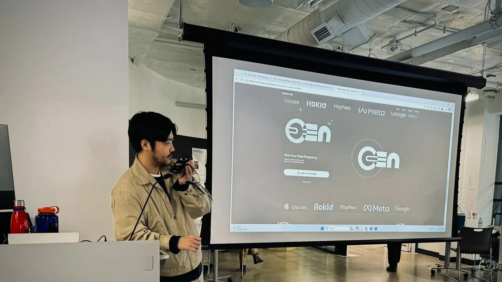
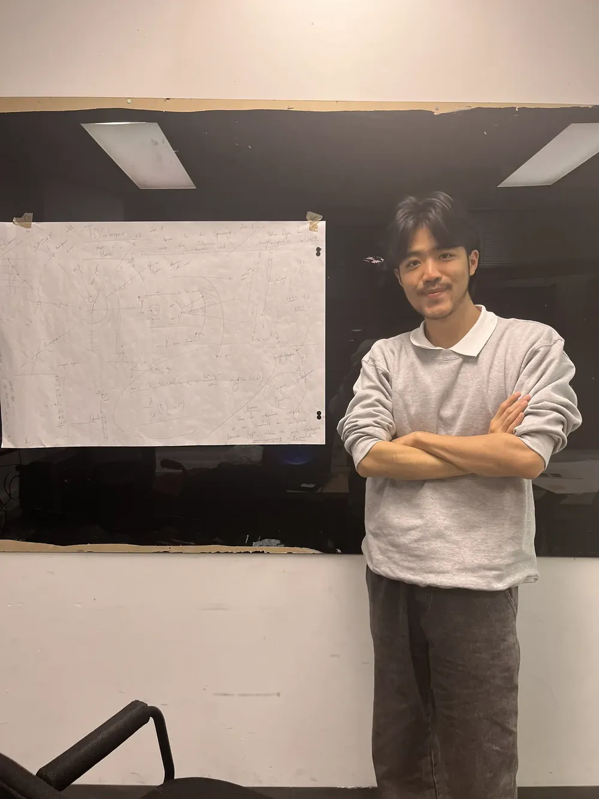
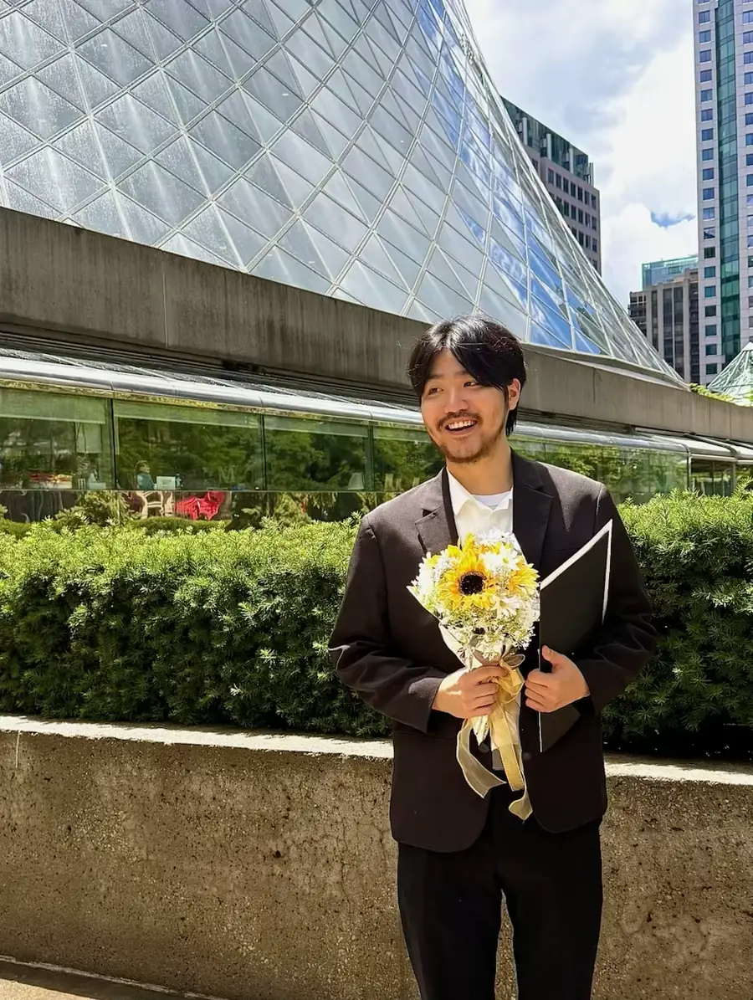
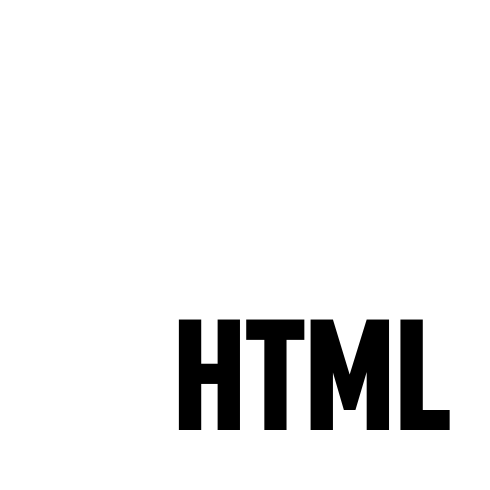
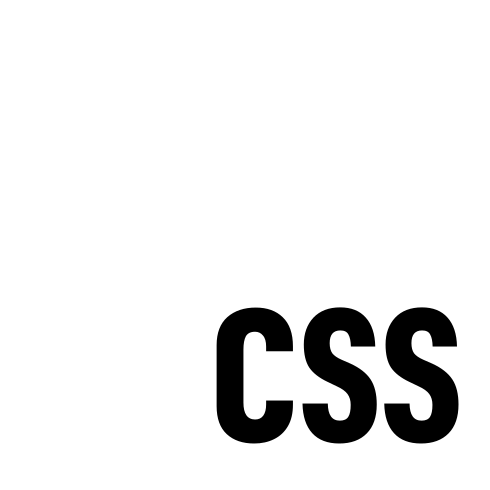
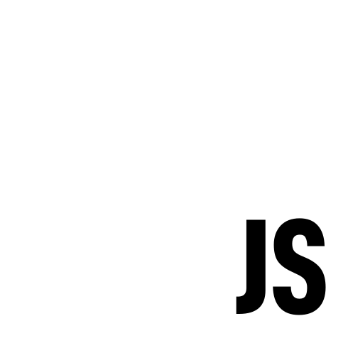

Hi, I’m Michael.



- Degree
- OCAD University, Industrial Design, May 2026
- Focus
- Product design, user experience design
- Interest
- Information systems, human-centred design, human-AI experience
- Status
- Open to 2026 roles
Approach
I focus on function rather than how it looks.
I am a product designer. I gather human-centred research, design thinking, and strategy, and use them to explore interaction and put it into a working product. Form follows that work rather than leading it, so a decision has to earn its place by what it does for the person using it.
In practice that means structuring qualitative and quantitative research, setting clear KPIs, and turning findings into artifacts stakeholders can act on. Research and documentation are how I keep a team aligned and a project pointed in the right direction.
Experience
- Oct to Dec 2025Junior Product DesignerSwave Studios, internshipToronto, ON
- Sep to Dec 2024UX Researcher and Concept DesignerCadillac Fairview, co-opToronto, ON
- 2023 to 2024Student Monitor, ProductionOCAD U Copy and PrintToronto, ON
- 2022 to 2023Presentation and Infographic DesignerIeumgil, HR consultingSeoul
- 2021 to 2022Sergeant, Squad LeaderROK Army, Military PoliceKorea
Recognition
Awards
- May 2026OnGen RadioACIDO, finalistToronto, ON
AI literacy
How I work with AI
- 01ContextContext ChainingCarry context and decisions forward
- 02Goal setting and briefingConstraint-First BriefingSet the goal and limits before the ask
- 03VerificationVerify Before DelegateCheck it works, then delegate more
- 04Fine-tuningDirected IterationRefine with specific direction, not retries
- 05Final judgementReframing & ChallengingReframe the problem, challenge the answer
Toolkit
What I use
Design and web
- FigmaWorkflow and prototyping
- FramerPrototyping

HTMLAI-assisted
CSSAI-assisted
JavaScriptAI-assisted- PythonBackend
- SQLData queries
Documentation
- PhotoshopIn-situ mockups
- PremiereSequence assembly
- IllustratorVector and design components
- PowerPointCorporate client pitches
- ExcelResearch data analysis
3D and prototyping
- Fusion 3603D prototyping (concept)
- KeyShotProduct rendering
- BlenderAnimation and VFX
- SolidWorks3D prototyping (fabrication)